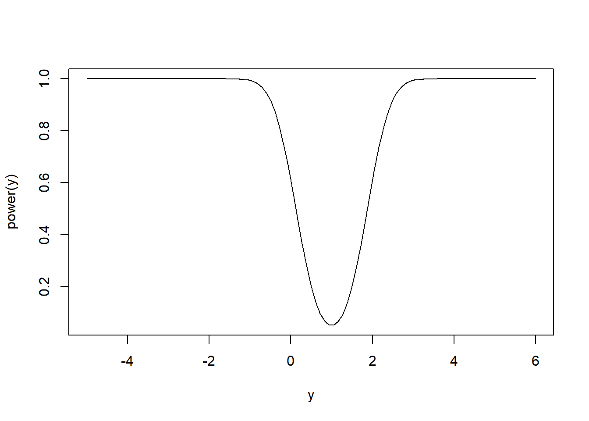
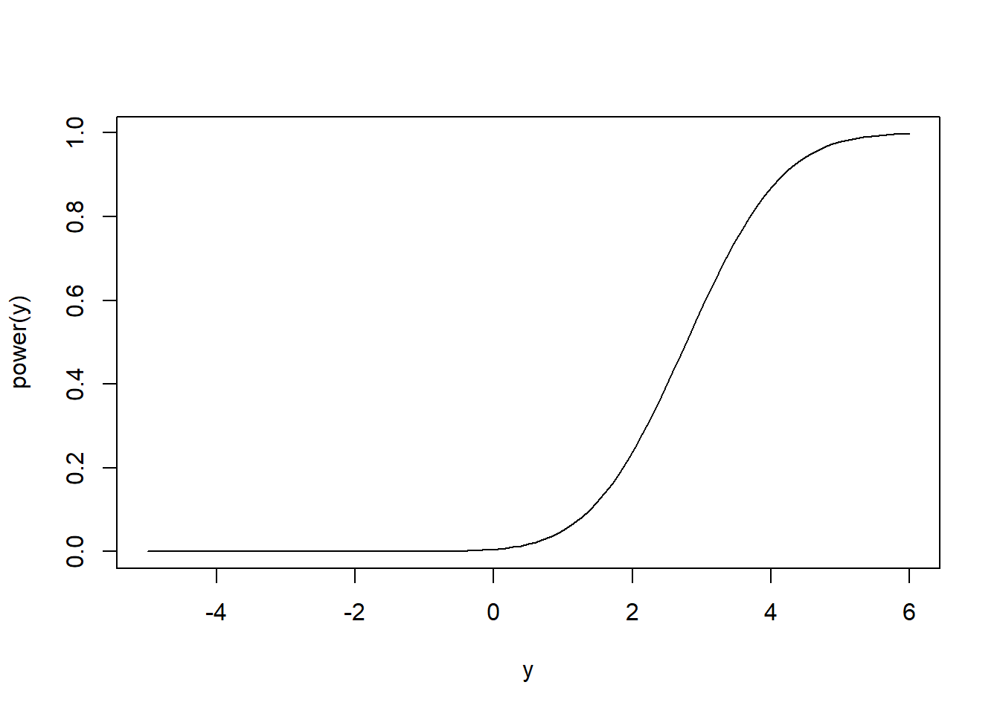
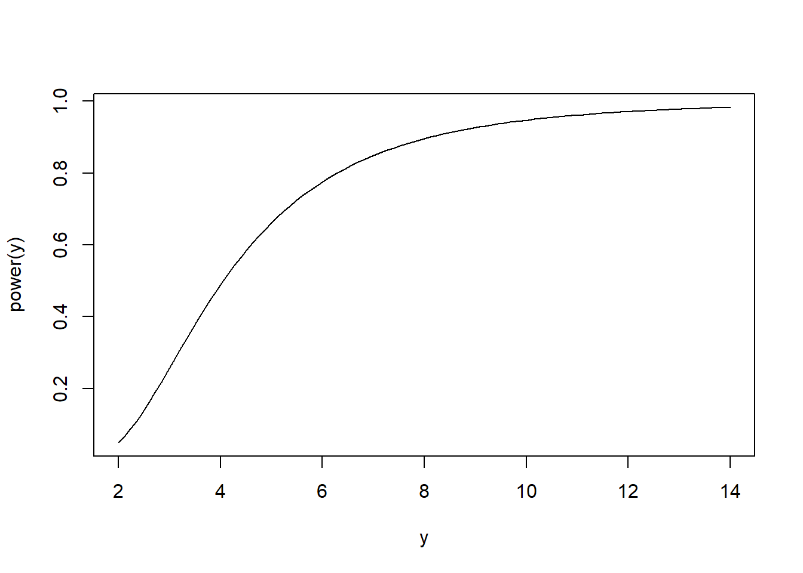
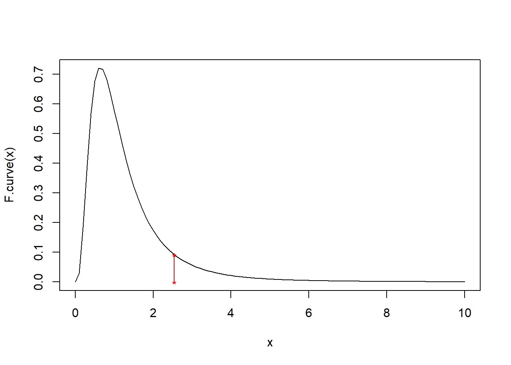
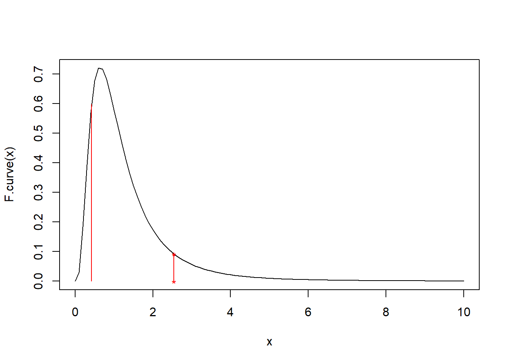
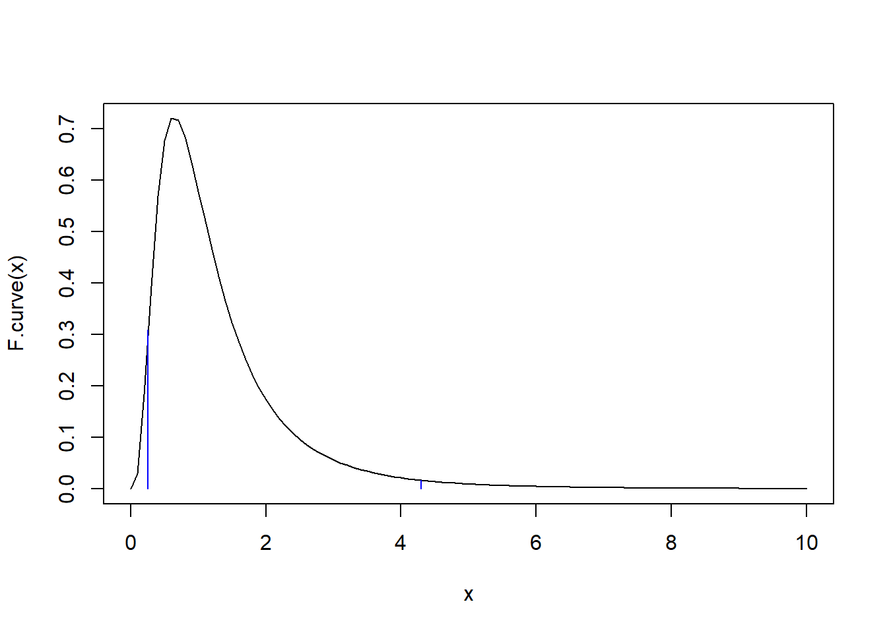
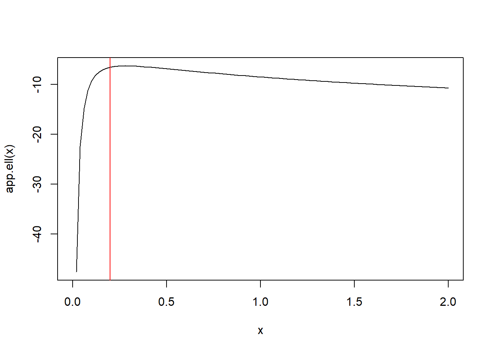

Chapter 14 Hypothesis Testing
So far our discussion of statistical inference has been limited to “estimation,” which is essentially any method that determines which parameter values match/agree with observed data. We have discussed both parametric and non-parametric estimation, although we have not used those terms. Non-parametric estimation refers to estimation of population parameters without specifying any probability model for the data. For example, the sample mean is a reasonable estimator of the population mean (should it exist) regardless of the sampling distribution of the data (the population distribution). Parametric estimators are tied to assumed sampling distributions. For example, maximum likelihood estimators totally rely on an assumed sampling distribution of the data (population distribution). Parametric estimation can be viewed as selecting which particular probability model within a given set (the assumed distribution) best fits the data.
We’ll next expand our discussion of statistical inference to ask a different, but related question. Instead of asking which parameters/model distributions agree with a given data set, we ask “how much evidence does a given data set provide for a particular parameter value or set of parameter values?” The particular parameter values are referred to as the hypothesis or “null hypothesis.” And, a procedure that determines whether the data provides sufficient evidence against the null hypothesis so as to make it implausible is called a “hypothesis test.”
14.1 Notation
Consider a generic parameter \(\theta\) taking values in some set \(\Theta\). The null hypothesis \(\theta\) takes exactly the value \(\theta_0\) is written \(H_0: \theta = \theta_0\). Its complement is the alternative hypothesis \(H_a: \theta\ne\theta_0\), which is always the set complement of the null hypothesis. In particular, \(H_0: \theta = \theta_0\) is called a “point-null hypothesis” because the set in the null hypothesis consists of only a single point. In other cases, the null hypothesis is “composite,” e.g., \(H_0:\theta \leq \theta_0\) versus \(H_a: \theta > \theta_0\).
Example: Suppose an experiment consist of collecting a random sample from a normal population with unknown mean \(\mu\) and unknown variance \(\sigma^2\). A point null hypothesis that \(\mu = 0\) is phrased \(H_0: \mu = 0\) versus the alternative hypothesis \(\mu \ne 0\). A point null hypothesis that \(\sigma^2 = 1\) is phrased \(H_0:\sigma^2=1\) versus \(H_a:\sigma^2 \ne 1\), where the alternative hypothesis tacitly assumes \(\sigma^2>0\).
14.2 Hypothesis testing outcomes
A hypothesis testing procedure begins with a pair of null and alternative hypotheses. Next, data relevant to the hypotheses is collected, and a decision is made as to whether the data provides sufficient evidence against the null hypothesis such that it may be rejected as implausible. Otherwise, the data are viewed as sufficiently consistent with the null hypothesis as to retain it.
As such, there are four possible outcomes of this procedure. In two cases, the correct decision is made: either the null hypothesis is true and it is retained, or the null hypothesis is false and it is reject. There are two corresponding errors:
1) A Type 1 error is committed when the null hypothesis is true but it is rejected; and,
2) A Type 2 error is committed when the null hypothesis is false and it is retained.
Since the decision to reject or retain the null hypothesis is based on a random sample of data, the decision is itself random; so, each of these outcomes has a certain probability of occuring. Given the null hypothesis is true, the chance of a Type 1 error occurring is denoted \(\alpha\) and is also called the Type 1 error rate. Given the null hypothesis is false the chance of a Type 2 error occurring is denoted \(\beta\), and its complement, the chance of rejecting \(H_0\) is denoted \(1-\beta\) and referred to as the “power of the test.”
Of course, it would be nice if one could eliminate any chance of an error occurring, but that is not possible. To see this, consider the extreme case of a non-random hypothesis test that always rejects the null hypothesis, no matter the data. Such a rule minimizes the chance of a Type 2 error (in fact there is such chance) but maximizes the chance of a Type 1 error. And, the opposite extreme, in which the null hypothesis is always retained similarly minimizes Type 1 error at the cost of maximizing Type 2 errors. Any testing procedure in between necessarily has some positive chance of each type of error.
As we will see, it is possible to construct hypothesis tests with an explicit cap (upper bound) on the Type 1 error rate \(\alpha\). This means that, whenever possible, it makes sense to design experiments and hypotheses such that Type 1 errors are more serious than Type 2 errors, so that they may be expressly controlled. A hypothesis test that limits \(\alpha\) to a prespecified level is called a “level-\(\alpha\) test.”
14.3 Tests based on a normal population
14.3.1 Test for a normal mean when the variance is known
Suppose a given population is known to follow a normal distribution with an unknown mean and a known variance \(\sigma^2\). We wish to test the point null hypothesis \(H_0:\mu = \mu_0\) for some given number \(\mu_0\) versus the alternative \(H_a:\mu \ne \mu_0\). And, we wish our test to limit the Type 1 error rate to a given level \(\alpha\), say, \(5\%\).
We obtain a random sample of size \(n\) from the population. How should we proceed? If \(H_0\) is true, then our data should look like it came from \(N(\mu_0, \sigma^2)\); specifically, the sample mean should be “close” to \(\mu_0\). If \(\overline X\) is close to \(\mu_0\), then \(H_0\) seems plausible, otherwise not. Our intuition says our test should look like: “reject \(H_0\) if \(|\overline X-\mu_0|>c\)” for some cutoff \(c>0\). The constraint on Type 1 error rate to be no more than \(\alpha\) is enough to determine \(c\):
\[\begin{align*}
1-\alpha &= P(-c\leq \overline X - \mu_0 \leq c)\\
& = P(-c/\sqrt{\sigma^2/n} \leq Z \leq c/\sqrt{\sigma^2/n})
\end{align*}\]
This implies we should reject \(H_0\) if \(|Z|>z_{1-\alpha/2}\) where
\[Z = \frac{\overline X - \mu_0}{\sqrt{\sigma^2/n}}\]
is the standardized sample mean assuming \(H_0\) is true (often it is said, “under \(H_0\)”).
Next, we investigate the power of this test. Recall the power is the probability the test rejects the null hypothesis when the null is false. For most tests, like the current one, the null hypothesis may be false in many ways. If \(H_0\) is false then \(\mu\ne \mu_0\), so \(\mu\) is some other number, lets say \(y\). Intuitively, for \(y\) values close to \(\mu_0\) we would not necessarily expect to notice \(H_0\) is false, but for \(y\) values far from \(\mu_0\) we would expect \(\overline X\) to be far from \(\mu_0\) and for the test to reject \(\mu_0\). So, we expect the power to be a function of \(y\) and to be increasing as a function of \(|y-\mu_0|\). Below we compute this power function: \[\begin{align*} P\left(\frac{\overline X - \mu_0}{\sigma/\sqrt{n}} < z_{\alpha/2}|\mu = y\right) & = P\left(\frac{\overline X - y}{\sigma/\sqrt{n}} < z_{\alpha/2}+\frac{\mu_0-y}{\sigma/\sqrt{n}}\right)\\ & = P\left(Z < z_{\alpha/2}+\frac{\mu_0-y}{\sigma/\sqrt{n}}\right). \end{align*}\] \[\begin{align*} P\left(z_{1-\alpha/2} < \frac{\overline X - \mu_0}{\sigma/\sqrt{n}}|\mu = y\right) & = P\left(z_{1-\alpha/2}+\frac{\mu_0-y}{\sigma/\sqrt{n}}<\frac{\overline X - y}{\sigma/\sqrt{n}}\right)\\ & = P\left(z_{1-\alpha/2}+\frac{\mu_0-y}{\sigma/\sqrt{n}} < Z\right)\\ & = 1-P\left(Z < z_{1-\alpha/2}+\frac{\mu_0-y}{\sigma/\sqrt{n}}\right). \end{align*}\] Therefore, the power as a function of \(y\) is \[(1-\beta) = P\left(Z < z_{\alpha/2}+\frac{\mu_0-y}{\sigma/\sqrt{n}}\right)+1-P\left(Z < z_{1-\alpha/2}+\frac{\mu_0-y}{\sigma/\sqrt{n}}\right).\] We illustrate this power function below for \(H_0:\mu = 1\) where \(\sigma^2 = 2\), \(n=10\), and \(\alpha = 0.05\).
alpha <- 0.05
mu0 <- 1
sigma2 <- 2
n <- 10
power <- function(y) pnorm(qnorm(alpha/2)+(1-y)/sqrt(sigma2/n))+1-pnorm(qnorm(1-alpha/2)+(1-y)/sqrt(sigma2/n))
curve(power, from = -5, to = 6, xlab = 'y', ylab = 'power(y)') 
The power is minimized (and equal to 0.05) at \(y = \mu_0\) where the test only rejects at rate \(\alpha\) by design. The power increases smoothly and symetrically as a function of \(|y-\mu_0|\) until the test has nearly a \(100\%\) chance of rejecting \(H_0\) for true mean sufficiently far from \(\mu_0\).
14.3.2 Test for a normal mean when the variance is unknown
As we have discussed many times when the population variance is unknown the Studentized sample mean has a Student’s \(t\) distribution with \(n-1\) degrees of freedom. A Student’s \(t-\)based test for \(H_0:\mu = \mu_0\) versus \(H_a:\mu\ne\mu_0\) is essentially the same as the above test but based on the \(T\) statistic, \(T = \frac{\overline X - \mu_0}{S/\sqrt{n}}\) rather than the \(Z\) statistic \(Z = \frac{\overline X - \mu_0}{\sigma/\sqrt{n}}\). A level-\(\alpha\) test rejects \(H_0\) if \(T > t_{1-\alpha/2}(n-1)\) or \(T < t_{\alpha/2}(n-1)\), where \(t_\alpha(df)\) is the Student’s \(t\) lower \(\alpha\) quantile with \(df\) degrees of freedom.
For a different angle, consider the test of the one-sided (composite) hypotheses \(H_0:\mu \leq \mu_0\) versus \(H_a:\mu > \mu_0\). Naturally, values of \(\overline X\) smaller than \(\mu_0\) lend support to the null hypothesis, so a level \(\alpha\) test of \(H_0\) only rejects the null if \(T > t_{1-\alpha}(n-1)\). Consider the power of this one-sided test. Since the test only rejects for large values of \(\overline X\), the power should increase as \(T\) increases. Mimicking (half of) our power calculation for the \(Z\) test above we have \[1-\beta = P\left(\frac{\overline X - y}{S/\sqrt{n}} + \frac{y - \mu_0}{S/\sqrt{n}} > t_{1-\alpha}(n-1)\right).\] The random variable \(\frac{\overline X - y}{S/\sqrt{n}} + \frac{y - \mu_0}{S/\sqrt{n}}\) has a Student’s \(t\) distribution with \(n-1\) degrees of freedom and non-centrality parameter \(y-\mu_0\).
alpha <- 0.05
mu0 <- 1
sigma2 <- 2
n <- 10
power <- function(y) 1-pt(qt(1-alpha, n-1), df = n-1, ncp = y - mu0)
curve(power, from = -5, to = 6, xlab = 'y', ylab = 'power(y)') ## Warning in pt(qt(1 - alpha, n - 1), df = n - 1, ncp = y - mu0): full precision
## may not have been achieved in 'pnt{final}'
## Warning in pt(qt(1 - alpha, n - 1), df = n - 1, ncp = y - mu0): full precision
## may not have been achieved in 'pnt{final}'
## Warning in pt(qt(1 - alpha, n - 1), df = n - 1, ncp = y - mu0): full precision
## may not have been achieved in 'pnt{final}'
## Warning in pt(qt(1 - alpha, n - 1), df = n - 1, ncp = y - mu0): full precision
## may not have been achieved in 'pnt{final}'
## Warning in pt(qt(1 - alpha, n - 1), df = n - 1, ncp = y - mu0): full precision
## may not have been achieved in 'pnt{final}'
## Warning in pt(qt(1 - alpha, n - 1), df = n - 1, ncp = y - mu0): full precision
## may not have been achieved in 'pnt{final}'
## Warning in pt(qt(1 - alpha, n - 1), df = n - 1, ncp = y - mu0): full precision
## may not have been achieved in 'pnt{final}'
## Warning in pt(qt(1 - alpha, n - 1), df = n - 1, ncp = y - mu0): full precision
## may not have been achieved in 'pnt{final}'
## Warning in pt(qt(1 - alpha, n - 1), df = n - 1, ncp = y - mu0): full precision
## may not have been achieved in 'pnt{final}'
14.3.3 Test for a normal population variance
Consider a test that rejects the null hypothesis \(H_0:\sigma^2 \leq \sigma_0^2\) if \(\frac{(n-1)S^2}{\sigma_0^2} \geq \chi^2_{1-\alpha}(n-1)\) where \(\chi^2_{\alpha}(df)\) is the Chi-squared lower \(\alpha\) quantile for a Chi-squared distribution with df degrees of freedom. Such a rejection rule defines a level-\(\alpha\) test: \[P\left(\frac{(n-1)S^2}{\sigma_0^2} \geq \chi^2_{1-\alpha}(n-1)|\sigma^2 = \sigma_0^2\right) = P\left(\chi^{2}(n-1) \geq \chi^2_{1-\alpha}(n-1)\right) = \alpha,\] by definition. We can compute the power curve of such a test: \[\begin{align*} P\left(\frac{(n-1)S^2}{\sigma_0^2} \geq \chi^2_{1-\alpha}(n-1)|\sigma^2 = y\right) & = P\left(\frac{(n-1)S^2}{y} \geq \frac{\sigma_0^2}{y}\chi^2_{1-\alpha}(n-1)\right)\\ & = P\left(\chi^2(n-1) \geq \frac{\sigma_0^2}{y}\chi^2_{1-\alpha}(n-1)\right) \end{align*}\]
alpha <- 0.05
mu0 <- 1
sigma2 <- 2
n <- 10
power <- function(y) 1-pchisq((2/y)*qchisq(1-alpha, n-1),n-1)
curve(power, from = 2, to = 14, xlab = 'y', ylab = 'power(y)') 
14.3.4 Tests for a difference of normal population means
Suppose \(X_1, \ldots, X_n\) and \(Y_1, \ldots, Y_m\) are random samples from two normal populations with unknown means and variances \(\mu_x\), \(\mu_y\), \(\sigma_x^2\), and \(\sigma_y^2\). Consider testing the point-null hypothesis \(H_0:\mu_x - \mu_y = \Delta\) versus \(H_a:\mu_x - \mu_y \ne \Delta\) for a given constant \(\Delta\). Following our previous strategies, the test decision should be based on one of the two statistics
\[T = \frac{\overline X - \overline Y - \Delta}{\sqrt{S_x^2/n + S_y^2/m}} \quad \text{or}\quad T_p = \frac{\overline X - \overline Y - \Delta}{\sqrt{S_p^2\left(1/n+1/m\right)}}.\]
Under the null hypothesis, \(T_p\) is exactly \(t\) distributed with \(n+m-2\) df if \(\sigma_x^2 = \sigma_y^2\), and under the null hypothesis \(T\) is approximately \(t\) distributed with the Welch-Satterthwaite choice of df. These two statistics, \(T_p\) and \(T\), are the basis for the pooled Student’s \(t\) test and Welch’s unpooled test for \(\mu_x - \mu_y\). For either test, we reject \(H_0\) if the test statistic is too large in absolute value, i.e., \(|T_p|>t_{1-\alpha/2}(n+m-2)\). The Welch test is usually the better choice because, as we have previously seen, Student’s pooled CIs perform may poorly when \(n\ne m\) and \(\sigma_x^2 \ne \sigma_y^2\), and the Student’s \(t\) test experiences the same problems.
These two-sample t-tests may be performed using R’s built-in t.test function:
set.seed(12345)
X <- rnorm(13, 5, 2)
Y <- rnorm(19, 4, 1)
# testing a point null with Delta = 1, alpha = 0.05
t.test(X,Y,alternative = 'two.sided',mu=1,var.equal=FALSE,conf.level = 0.95)##
## Welch Two Sample t-test
##
## data: X and Y
## t = -0.23467, df = 17.877, p-value = 0.8171
## alternative hypothesis: true difference in means is not equal to 1
## 95 percent confidence interval:
## -0.2897301 2.0306764
## sample estimates:
## mean of x mean of y
## 5.114192 4.243719t.test(X,Y,alternative = 'two.sided',mu=1,var.equal=TRUE,conf.level = 0.95)##
## Two Sample t-test
##
## data: X and Y
## t = -0.25733, df = 30, p-value = 0.7987
## alternative hypothesis: true difference in means is not equal to 1
## 95 percent confidence interval:
## -0.1574864 1.8984327
## sample estimates:
## mean of x mean of y
## 5.114192 4.243719The t.test function returns a “p-value” which is defined as the null-hypothesis-true probability of observing the observed test statistic or a more extreme value. In other words, it is equal to the equivalent \(\alpha\) for which the observed test statistic lies on the boundary of the reject/retain criterion. For example, Welch’s test gives a p-value of 0.8171. The test statistic is \[T = \frac{5.114192-4.243719-1}{\sqrt{3.18206/13 + 1.137897/19}}=-0.2346661.\] And, the Welch-Satterthwaite df is 17.877 according to t.test. For a test statistic value of -0.2346661 to be borderline for rejection means the upper \(t(17.877)\) quantile for rejection would equal 0.2346661. Using the \(pt\) function we have \((1-pt(0.2346661,17.877)) = 0.4085673\) which constitutes the probability on one half of the symmetric “rejection region,” so that the p-value is twice this number, or \(0.8171347\), as given by t.test.
(1-pt(0.2346661,17.877))## [1] 0.408567314.3.5 Test for equality of normal population variances
Let \(X_1, \ldots, X_n\) be iid \(N(\mu_x, \sigma_x^2)\) and \(Y_1, \ldots, Y_m\) be iid \(N(\mu_y, \sigma_y^2)\) and consider testing \(H_0:\sigma_x^2/\sigma_y^2 = 1\) versus \(H_a: \sigma_x^2/\sigma_y^2 \ne 1\). As we have seen previously
\[\frac{S_x^2/\sigma_x^2}{S_y^2/\sigma_y^2}\sim F(n-1, m-1)\]
and, under the null hypothesis, we have
\[\frac{S_x^2}{S_y^2}\stackrel{H_0}{\sim} F(n-1, m-1),\]
so that a level \(\alpha\) test rejects the null hypothesis if \(F = \frac{S_x^2}{S_y^2} > F_{1-\alpha/2}(n-1, m-1)\) or \(F < F_{\alpha/2}(n-1, m-1)\).
Example: Suppose we obtain the following two random samples of \(X\) and \(Y\) values:
\[x:25.20,\,\,\, 23.53,\,\,\, 18.02,\,\,\, 18.96,\,\,\, 15.70, \,\,\,10.35, \,\,\,24.07,\,\,\, 17.10, \,\,\,21.51, \,\,\, 7.48, \,\,\,12.76 \] \[y: 19.16,\,\,\, 20.05, \,\,\,16.99,\,\,\, 19.83,\,\,\, 21.07,\,\,\, 21.47,\,\,\, 25.44,\,\,\, 11.96,\,\,\, 19.45\]
x <- c(25.20, 23.53, 18.02, 18.96, 15.70, 10.35, 24.07, 17.10, 21.51, 7.48, 12.76)
y <- c(19.16, 20.05, 16.99, 19.83, 21.07, 21.47, 25.44, 11.96, 19.45)
F <- var(x)/var(y)
F## [1] 2.539221F.curve <- function(x) df(x, 10, 8)
curve(F.curve, 0, 10)
points(F, F.curve(F), pch = '*', col = 'red')
points(F, 0, pch = '*', col = 'red')
lines(c(F,F), c(0,F.curve(F)), col = 'red')
1-pf(F, 10, 8)## [1] 0.099890542*(1-pf(F, 10, 8))## [1] 0.1997811qf(0.09989054, 10,8)## [1] 0.4204884curve(F.curve, 0, 10)
points(F, F.curve(F), pch = '*', col = 'red')
points(F, 0, pch = '*', col = 'red')
lines(c(F,F), c(0,F.curve(F)), col = 'red')
lines(c(qf(0.09989054, 10,8),qf(0.09989054, 10,8)), c(0,F.curve(qf(0.09989054, 10,8))), col = 'red')
curve(F.curve, 0, 10)
lines(c(qf(0.025, 10,8),qf(0.025, 10,8)), c(0,F.curve(qf(0.025, 10,8))), col = 'blue')
lines(c(qf(0.975, 10,8),qf(0.975, 10,8)), c(0,F.curve(qf(0.975, 10,8))), col = 'blue')
14.4 Likelihood-based Tests
In our discussions of point and interval estimation we found likelihood-based methods provided a general means of deriving estimators with (at least) good large-sample performance. The same is true with respect to testing. However, there’s more than one way to use the likelihood function to define a test, and we’ll discuss two strategies.
14.4.1 Wald type tests
Wald-type tests follow the strategy we’ve been using. The test is based on a point estimator and its distribution. The testing rule is essentially to reject the null if the point estimator sufficiently disagrees with the null where ``sufficiently” is determined by the estimator’s distribution. In the case of likelihood-based Wald tests the point estimator is the MLE and the distribution is the (asymptotic/approximate) normal distribution of the MLE. Therefore, all Wald-type likelihood-based tests of \(H_0:\theta = \theta_0\) versus \(H_a:\theta\ne \theta_0\) are of the form “Reject \(H_0\) if:”
\[\theta_0 \notin (\hat\theta \pm z_{1-\alpha/2}[nI(\theta_0)]^{-1/2}),\]
because
\[\frac{\hat\theta - \theta_0}{[nI(\theta_0)]^{-1/2}}\stackrel{H_0}{\sim}N(0,1)\]
where \(\theta\) is a scalar.
Note: for point null tests \(H_0:\theta=\theta_0\) for \(p\times 1\) vector parameters \((\hat\theta-\theta_0)[nI(\theta_0)]^{-1/2}\) is a p-variate standard normal and the quadratic form \((\hat\theta-\theta_0)^{\top}[nI(\theta_0)]^{-1} (\hat\theta-\theta_0)\) has a Chi-squared distribution with \(p\) degrees of freedom. And, the Wald test is based on quantiles of this Chi-squared distribution.
Example: Suppose \(X_1, \ldots, X_n\) is a random sample from an Exponential distribution with scale parameter \(\lambda\) and consider testing \(H_0:\lambda \leq \lambda_0\) versus \(H_a:\lambda > \lambda_0\). The sample mean is the MLE of \(\lambda\), and \(n\overline X= \sum_{i=1}^nX_i \sim\) Gamma\((n, \lambda)\). Therefore, an exact test is based on the Gamma distribution, while a likelihood-based Wald test is based on \(\overline X \stackrel{H_0}{\sim}N(\lambda_0,\lambda_0^2/n)\), approximately. Suppose \(\lambda_0 = 5\) and we observe the following random sample of size 12:
\[x : 12.57,\,\,\, 1.83,\,\,\, 2.10,\,\,\, 3.00,\,\,\, 0.65,\,\,\, 2.74,\,\,\, 14.21,\,\,\, 1.72,\,\,\, 3.13,\,\,\, 1.63,\,\,\, 2.42,\,\,\, 9.33\]
x = c(12.57, 1.83, 2.10, 3.00, 0.65, 2.74, 14.21, 1.72, 3.13, 1.63, 2.42, 9.33)
xbar <- mean(x)
xbar## [1] 4.610833c(xbar - 1.96*5/sqrt(12), xbar + 1.96*5/sqrt(12))## [1] 1.781817 7.4398505## [1] 5c(qgamma(0.025, shape = 12, scale = 5), qgamma(0.975, shape = 12, scale = 5))## [1] 31.00288 98.41019xbar * 12## [1] 55.33c(qgamma(0.025, shape = 12, scale = 5), qgamma(0.975, shape = 12, scale = 5))/12## [1] 2.583573 8.200849xbar## [1] 4.610833Simulation of Type 1 error rates:
reps <- 10000
errors <- matrix(0, reps, 2)
for(r in 1:reps){
x <- rexp(12,rate = 1/5)
xbar <- mean(x)
rr.wald <- c(xbar - 1.96*5/sqrt(12), xbar + 1.96*5/sqrt(12))
rr.exact <- c(qgamma(0.025, shape = 12, scale = 5), qgamma(0.975, shape = 12, scale = 5))/12
errors[r, ] <- c(ifelse(5>rr.wald[1] & 5<rr.wald[2],0,1), ifelse(xbar>rr.exact[1] & xbar<rr.exact[2],0,1))
}
colMeans(errors)## [1] 0.0487 0.053614.4.2 Likelihood ratio tests
Likelihood ratio tests (LRTs) operate a little differently compared to Wald tests. The LRT idea is that parameter values with corresponding likelihood values near the maximum are plausible, while those with low likelihood values are implausible. For testing \(H_0:\theta = \theta_0\) versus \(H_a:\theta\ne \theta_0\) this means if \(\frac{L(\theta_0)}{L(\hat\theta)}\) is close to 1 the null is supported while if the ratio is close to zero the alternative is supported. How “close” is close again depends on the null-hypothesis distribution of the likelihood ratio. A general asymptotic result holds that for scalar parameters \[-2[\ell(\theta_0) - \ell(\hat\theta)] \stackrel{H_0}{\sim} Chi-squared(1)\] approximately. This result also holds for general composite hypotheses \(H_0:\theta\in \Theta_0\) versus \(H_a: \theta\in \Theta \cap \Theta_0^c\) so that \[-2[\sup_{\theta\in \Theta_0}\{\ell(\theta)\} - \ell(\hat\theta)]\stackrel{H_0}{\sim} Chi-squared(df)\] where \(df\) is equal to the difference in dimensions of the parameter space.
Example: Consider a test for \(H_0:\mu = \mu_0\) versus \(H_a:\mu \ne \mu_0\) for a normal population with unknown variance. In that case \(\Theta\) is the two-dimensional parameter space for \((\mu, \sigma^2)\) which is \(\mathbb{R}\times \mathbb{R}^+\) and \(\Theta_0\) is the one-dimensional subspace \(\{\mu_0\}\times \mathbb{R}^+\). The unrestricted MLEs are \(\overline x\) and \(\hat\sigma^2 = n^{-1}\sum_{i=1}^n(x_i - \overline x)^2\). It’s not hard to show the restriced MLE for \(\sigma^2\) under the null hypothesis is \(\hat\sigma_0^2 = n^{-1}\sum_{i=1}^n (x_i - \mu_0)^2\). To test \(H_0\) we compute the test statistic \[\Lambda := -2[\ell(\mu_0, \hat\sigma_0^2) - \ell(\overline x, \hat\sigma^2)]\] and reject the null hypothesis if \(\Lambda > \chi^2_{1-\alpha}(1)\), the \(1-\alpha\) lower quantile of the Chi squared distribution with 1 degree of freedom. Let’s perform the test given the following sample:
x <- rnorm(22, 8, 6)
x## [1] 4.0634008 9.1198213 13.6167056 7.1889954 13.9577182 10.2795735
## [7] 7.8406222 6.1487191 0.2090839 0.7775581 10.5912890 10.3346847
## [13] 19.6868480 0.8674458 12.9657995 8.1965838 2.9815080 7.5730705
## [19] 8.2187202 2.9247010 4.4469792 3.5998290xbar <- mean(x)
xbar## [1] 7.526803mu0 <- 7
mle <- (1/22)*sum((x-xbar)^2)
mle## [1] 23.11427mle0 <- (1/22)*sum((x - mu0)^2)
mle0## [1] 23.39179loglhood <- function(mu, sigma2) sum(dnorm(x,mu,sqrt(sigma2),log = TRUE))
Lambda <- (-2)*(loglhood(mu0,mle0) - loglhood(xbar,mle))
Lambda## [1] 0.2625694qchisq(0.95, 1)## [1] 3.841459
Example: Consider the following data on cell phone battery charge times
\[8.0, \,\,\, 8.1, \,\,\, 8.9, \,\,\, 9.1, \,\,\, 9.2, \,\,\, 9.3, \,\,\, 9.4, \,\,\, 9.4\]
Assuming these times constitute a random sample from a normal population test the hypothesis \(H_0:\sigma^2 \leq 0.2\) versus \(H_a:\sigma^2 > 0.2\) using an LRT at \(\alpha = 0.05\).
The loglikelihood, again, is
\[\ell(\mu, \sigma^2; x) = -(n/2)\log [2\pi\sigma^2] - \frac{1}{2\sigma^2}\sum_{i=1}^n(x_i - \mu)^2.\]
The unrestricted MLEs are \(\overline x = 8.925\) and \(\hat\sigma^2 = 0.28\). Under the null hypothesis the MLE of \(\mu\) remains \(\overline x = 8.925\) because the derivative of the loglikelihood w.r.t. \(\mu\) is proportional to \(\sigma^2\); i.e., it equals \(\frac{1}{\sigma^2}\sum_{i=1}^n (x_i - \mu)\). Then, setting equal to zero we see the MLE for \(\mu\) is still \(\overline x\). To find the restricted MLE of \(\sigma^2\) under \(H_0\), plot the loglikelihood as a function of \(\sigma^2\) with \(\mu = \overline x\) below and note that it is maximized at \(0.2\) over the set \(\sigma^2 \leq 0.2\). The test statistic is
\[-2(\ell(8.925,0.2;x) - \ell(8.925,0.28;x)) = 0.501\]
which is below the cutoff of 3.84, the \(95\%\) quantile of the Chi-squared distribution with 1 degree of freedom (the difference in two versus one free parameter in the alternative versus null hypothesis).
x <- c(8.0,8.1,8.9,9.1,9.2,9.3,9.4,9.4)
ell <- function(sig2) sum(dnorm(x,mean(x),sqrt(sig2),log = TRUE))
app.ell <- function(sig2) apply(matrix(sig2,length(sig2),1),1,ell)
curve(app.ell,0,2)
abline(v = 0.2, col = 'red')
test.stat <- -2*(ell(0.2)-ell(0.28))
test.stat## [1] 0.5010792qchisq(0.95,1)## [1] 3.84145914.5 Chi Squared tests for tabulated data
To this point most of our experiments have dealt with continuous data. But, a common type of data encountered in experiments is tabulated or cross-classified data. For example, consider the following data on phsychologists’ opinions concerning the causes of schizophrenia:
| Origin | ||||
|---|---|---|---|---|
| School | Biogenic | Environment | Combination | |
| Eclectic | 90 | 12 | 78 | 180 |
| Medical | 13 | 1 | 6 | 20 |
| Psychoanalytic | 19 | 13 | 50 | 82 |
| 122 | 26 | 134 | 282 |
A test of interest is whether the psychologists’ schools of thought are related to their responses. Statistically, this can be interpreted as a test of independence between the variables “school” and “cause.” A test of this hypothesis of independence may be based on a multinomial sampling distribution where the 282 respondents are assumed to be a random sample from a multinomial distribution with 9 cross-classified categories based on “school” and “cause.” This distribution has 8 free parameters for the category memberships. Under the null hypothesis, the joint probabilities are products of the marginal “school” and “cause” probabilities, so that there are only 4 free parameters.
A Chi-squared test for independence is based on the following test statistic:
\[\chi^2 = \sum_{i=1}^I (O_i - E_i)^2 / E_i\]
where \(O_i\) is the observed category count and \(E_i\) is the expected category count under \(H_0\). Under the hypothesis of independence we expect the category counts to be \(n = 282\) times the products of marginal category probabilities. For example, we expect to find \(282 *(180/282)*(122/282) = 77.87\) counts in the Biogenic-Eclectic category; we observe 90. Similarly, we expect \(26*20/282 = 1.84\) counts in the Medical-Environment category; we observe 1. The first summand in the test statistic is \((77.87 - 90)^2 / 77.87 = 1.88952\). Following along this way, we compute the test statistic to be \(\chi^2 = 22.37769\). The \(chi^2\) test statistic is approximately Chi-squared distributed with df equal to the difference in the number of free parameters in \(H_0\) and \(H_a\). In this case, that is \(8 - 4 = 4\). Since the \(95\%\) quantile of the Chi-squared distribution with 4 df is 9.487729, we reject the null hypothesis of independence.
We could also perform an LRT of the independence hypothesis based on the multinomial distribution of the cell counts. The MLEs of the cell proportions are simply the observed cell proportions. The multinomial loglikelihood is given by
\[\ell(p;x_1, \ldots, x_n) = \log \frac{n!}{x_1!\times \cdots \times x_9!} + \sum_{j=1}^9 x_j\log p_j.\]
In R, we can simply use “dmultinom” with option log = TRUE to compute the loglikleihood.
test.stat <- -2*(dmultinom(c(90,12,78,13,1,6,19,13,50),prob = c(180*122, 180*26, 180*134, 20*122, 20*26, 20*134, 82*122, 82*26, 82*134)/(282*282), log = TRUE)-dmultinom(c(90,12,78,13,1,6,19,13,50),prob = c(90,12,78,13,1,6,19,13,50)/282, log = TRUE))
test.stat## [1] 23.03619qchisq(0.95,4)## [1] 9.487729For completeness, let’s show the MLEs of multinomial cell probabilities are the corresponding sample proportions. The loglikelihood is equal to \[\ell(p;x) = \log \left(\frac{n!}{x_1!\times x_2!\times \cdots\times x_9!} + x_1\log(p_1) \times \cdots \times x_8 \log(p_8) + (n-x_1-x_2-\cdots -x_8)\log(1-p_1-\cdots -p_8)\right).\] Take the derivative of the loglikelihood w.r.t. \(p_1\), set equal to zero, and find \[\frac{1 - p_1 - p_2 - \cdots - p_8}{p_1} - \frac{n-x_1-x_2-\cdots -x_8}{x_1}\] Divide the right-hand-side by \(n\) in both the numerator and denominator to find \[\frac{1 - p_1 - p_2 - \cdots - p_8}{p_1} = \frac{1-\frac{x_1}{n} - \frac{x_2}{n}-\cdots - \frac{x_8}{n}}{\frac{x_1}{n}}.\] That this holds simultaneously for derivatives with respect to \(p_2\) through \(p_8\) implies the MLEs of the cell probabilitites are exactly the sample cell proportions. A similar argument can be made under \(H_0\) to show the MLEs under \(H_0\) are the sample marginal cell proportions.
14.5.1 Goodness of fit tests
The same Chi-squared test used above comparing observed awith expected cell counts is used to test the “goodness of fit” of a model to a data set. This test is most often used with discrete data, but can be used with continuous data by “binning” or discretizing continuous data in the same fashion as a histogram. For tabulated data the goodness of fit test statistic has df \(k-p-1\) where \(k\) is the number of cells in the table and \(p\) is the number of estimated parameters in the null hypothesis.
Example: Suppose an experiment records the number of customers entering a salon each hour during a weekday for the purpose of determining staffing requirements. The observed data are as follows:
| 8am | 9am | 10am | 11am | 12pm | 1pm | 2pm | 3pm | 4pm | 5pm | 6pm |
|---|---|---|---|---|---|---|---|---|---|---|
| 3 | 6 | 14 | 11 | 6 | 4 | 4 | 3 | 8 | 11 | 3 |
We decide to perform a goodness of fit test to determine whether the data fit a Poisson distribution. It the data appear to be a Poisson random sample, then that implies there is not a strong temporal pattern in the data. On the other hand if the data do not fit a Poisson distribution the lack of fit may be caused by a temporal pattern (so that the data are not iid). Based on the computation below, we see we reject the null hypothesis that the data are a Poisson random sample at \(\alpha\) level \(5\%\).
Below we bin the data into categories of 0-3 counts, 4-7 counts, 8-11, and 12+. A good rule of thumb is to choose bins such that the expected counts are not less than 1/2.
x <- c(3,6,14,11,6,4,4,3,8,11,3)
n <- 11
bins <- c(3,4,3,1)
eis <- n*c(sum(dpois(0:3, mean(x))),sum(dpois(4:7, mean(x))),sum(dpois(8:11, mean(x))), 1-ppois(11,mean(x)))
sum(((bins - eis)^2)/eis)## [1] 4.610001qchisq(0.95,4-1-1)## [1] 5.9914651-pchisq(sum(((bins - eis)^2)/eis),4-1-1)## [1] 0.09975877